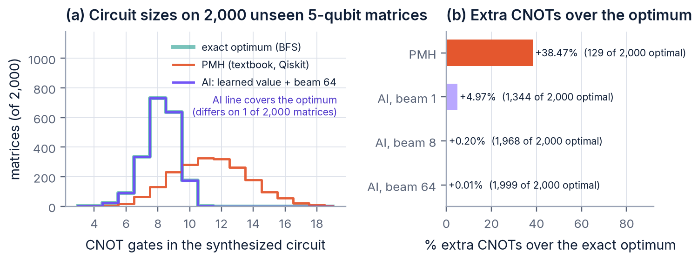

ในบทความนี้
- เป้าหมายของ compiler — เปลี่ยนวิธีทำ โดยคงฟังก์ชันเดิม
- เลือก cost ให้ตรงเครื่อง — CNOT, depth และ T gates
- GF(2) — เปลี่ยน circuit เป็นกราฟที่ตรวจได้แน่นอน
- ลงมือเขียน — shortest path และการตรวจ inverse
- อ่าน Lab 4 — learned search เทียบ optimum และ PMH
- ทดลองต่อ — เปลี่ยน gate set แล้วเก็บ verifier ไว้
- Run & check — รันตัวอย่างด้วยตัวเอง
- Sources & scope — แหล่งอ้างอิงและขอบเขต
In this post
- The compiler contract: change the implementation, preserve the function
- Choose the cost for the machine: CNOTs, depth and T gates
- GF(2): turn synthesis into a graph with exact semantics
- Write the exact search and verify its inverse
- Read Lab 4: learned search against the optimum and PMH
- Your experiment: change the gate set, keep the verifier
- Run and check the example
- Sources and scope
เป้าหมายของ compiler — เปลี่ยนวิธีทำ โดยคงฟังก์ชันเดิม
ดาวน์โหลดหนังสือและโค้ดประกอบ
ดาวน์โหลด Below Threshold ฉบับเต็ม (PDF ภาษาอังกฤษ · 104 หน้า · 5.4 MB)
อ่านบน Google Drive · ดาวน์โหลดตัวอย่าง Python ทั้งสิบบท (ZIP)
บทที่ 6/10 · บทเรียนดัดแปลงจาก Below Threshold: AI, Quantum Errors and Better Code ฉบับ 1.0 บทที่ 6 หน้า 38–45
บทก่อนพยายามแก้ผลจาก noisy execution ส่วนบทนี้ลดโอกาสเกิด error ตั้งแต่ต้น ด้วยการเปลี่ยน circuit ให้ใช้ทรัพยากรน้อยลงโดยยังคำนวณ transformation เดิม Chapter 6 ของหนังสือเรียกสิ่งนี้ว่า AI ช่วยแก้คณิตศาสตร์ภายในโปรแกรม
พื้นฐานที่ใช้คือ binary matrices, XOR และ graph search เราจะเขียน exact synthesizer สามบิตที่ตรวจทุกคำตอบได้ แล้วใช้มันเป็นฐานทำความเข้าใจ learned search ใน Lab 4 ที่มีขนาดใหญ่กว่า เป้าหมายสำคัญกว่าคำว่า AI คือการมี evaluator ที่ตรวจ semantic equivalence ได้อย่างอิสระ
สำหรับ classical programmer ให้มองว่าเรากำลัง optimize intermediate representation แต่ทุก rewrite ต้องรักษา specification Gate count เป็น objective หนึ่ง ส่วน correctness เป็น constraint ถาวร การได้ circuit สั้นลงแต่คำนวณผิดเป็นผลที่ใช้งานไม่ได้
เลือก cost ให้ตรงเครื่อง — CNOT, depth และ T gates
การนับ gates ทั้งหมดเท่ากันอาจผิดเป้าหมาย บนเครื่องที่มี noise สูง two-qubit gates และ depth มักเป็นสิ่งที่ compiler ต้องลด แต่ connectivity อาจบังคับให้เพิ่ม SWAPs หากวาง logical qubits ผิดตำแหน่ง วงจรที่สั้นบน abstract all-to-all device อาจแพงเมื่อลงเครื่องจริง
ใน fault-tolerant architecture หลายแบบ T gates มีต้นทุนจาก magic-state preparation จึงเกิดงาน T-count optimization ที่มี objective ต่างจาก CNOT synthesis AlphaTensor-Quantum ใช้ reinforcement learning กับ tensor decomposition เพื่อหาการลด T-count บน benchmark circuits
อย่าสลับความหมายของผลลัพธ์: ลด CNOT 27.8% ใน lab ไม่เท่ากับลด T-count 27.8% หรือทำให้ application เร็วขึ้นเท่ากัน กำหนด native gate set, connectivity, ancillas และสิ่งที่ต้องรักษาไว้ใน specification ก่อนวัด
Compiler ควรรายงานทั้งค่า cost หลัง mapping และเวลาที่ใช้ค้นหา หาก compile ใช้เวลานานมากแต่ circuit รันครั้งเดียว การ optimize เชิงรุกอาจไม่คุ้ม ตรงกันข้าม circuit ที่ reuse หลายล้านครั้งอาจยอมจ่าย search ล่วงหน้าได้
GF(2) — เปลี่ยน circuit เป็นกราฟที่ตรวจได้แน่นอน
Linear reversible circuit คำนวณ y=Ax บน GF(2) ซึ่งบวกเท่ากับ XOR และคูณด้วย binary values Matrix A ต้อง invertible เพื่อให้แปลงกลับได้ การทำ CNOT จาก control c ไป target t เปลี่ยน target output เป็น xₜ XOR x꜀ จึงแทนด้วยการ XOR row c เข้า row t
เริ่มจาก identity matrix แล้วใช้ CNOT ทุกคู่ที่อนุญาต แต่ละ matrix ที่ไปถึงเป็น node และ CNOT เป็น edge ถ้า edges มี cost เท่ากัน breadth-first search (BFS) จะพบ shortest path เมื่อค้นพบ node ครั้งแรก เพราะสำรวจตามจำนวน gates ที่เพิ่มขึ้นทีละหนึ่ง
ตัวอย่างของเราใช้สามบิต มี invertible matrices ทั้งหมด (8−1)(8−2)(8−4)=168 แบบ จึงไล่ได้ครบ จำนวนนี้เล็กพอจะเป็น exact oracle สำหรับให้คะแนน ไม่ต้องใช้ model ทำนายระยะทาง
ขอบเขตสำคัญ: ตัวอย่างนี้มีเฉพาะ CNOT ที่ทำ linear map ไม่มี phase gates, arbitrary rotations, hardware noise หรือ topology restrictions การตรวจ basis inputs ครบจึงเพียงพอสำหรับฟังก์ชันในคลาสนี้ แต่ไม่พอสำหรับ quantum circuit ทั่วไปที่อาจต่างกันเฉพาะ relative phase
ลงมือเขียน — shortest path และการตรวจ inverse
เราแทนแต่ละ matrix row ด้วย integer bit mask การทำ CNOT จึงเป็น XOR เพียงหนึ่งครั้ง ให้ target circuit เริ่มจากห้า gates ที่มีคู่ gates หักล้างกัน แล้วให้ BFS หา shortest circuit โดยไม่ต้องใส่กฎ cancellation เป็นพิเศษ
"""Exact synthesis for three-bit linear reversible maps over GF(2)."""
from collections import deque
from itertools import product
N = 3
identity = tuple(1 << i for i in range(N))
gates = [(c, t) for c in range(N) for t in range(N) if c != t]
def apply(matrix, gate):
control, target = gate
rows = list(matrix)
rows[target] ^= rows[control]
return tuple(rows)
# Breadth-first search has unit-cost edges, so first discovery is shortest.
paths = {identity: []}
queue = deque([identity])
while queue:
matrix = queue.popleft()
for gate in gates:
nxt = apply(matrix, gate)
if nxt not in paths:
paths[nxt] = paths[matrix] + [gate]
queue.append(nxt)
original = [(0, 1), (1, 2), (0, 1), (0, 1), (2, 0)]
target = identity
for gate in original:
target = apply(target, gate)
optimized = paths[target]
def run(bits, circuit):
bits = list(bits)
for control, target_bit in circuit:
bits[target_bit] ^= bits[control]
return tuple(bits)
inputs = list(product((0, 1), repeat=N))
assert len(paths) == (8-1)*(8-2)*(8-4) == 168
assert all(run(x, original) == run(x, optimized) for x in inputs)
assert all(run(run(x, optimized), reversed(optimized)) == x for x in inputs)
print(f"Invertible maps checked: {len(paths)}")
print(f"CNOT count: original={len(original)}, exact shortest={len(optimized)}")
print("Shortest circuit:", optimized)
print(f"Equivalence and inverse verified on all {len(inputs)} inputs")Invertible maps checked: 168
CNOT count: original=5, exact shortest=3
Shortest circuit: [(0, 1), (1, 2), (2, 0)]
Equivalence and inverse verified on all 8 inputsผลลัพธ์ลดจากห้าเป็นสาม CNOTs และตรวจ semantic equivalence ครบแปด input strings จากนั้นรัน shortest circuit แล้วย้อน gates กลับเพื่อเช็ก inverse เพราะ CNOT เป็น inverse ของตัวเอง จึงกลับลำดับ gates เพื่อ invert ทั้ง circuit ได้
เก็บ verifier นี้แยกจาก logic ของ search การแค่ตรวจว่าจำนวน gates ลดลงยังไม่บอกว่าฟังก์ชันเดิมถูกเก็บไว้ หากในอนาคตเปลี่ยน BFS เป็น neural heuristic verifier ต้องทำงานเหมือนเดิม และ candidate ที่ไม่ผ่านต้องถูกปฏิเสธก่อนรายงาน cost gain
อ่าน Lab 4 — learned search เทียบ optimum และ PMH


ตัวเลขต่อไปนี้เป็น ผลที่บันทึกในหนังสือ Lab 4 หา optimum ด้วย BFS บน GL(5,2) ทั้ง 9,999,360 matrices ฝึก value network จาก 5% ของกลุ่มเพื่อทำนาย CNOTs ที่ยังต้องใช้ แล้วทดสอบ 2,000 unseen matrices โดยตรวจ circuit ทุกตัวด้วย Qiskit LinearFunction
| วิธี | Mean CNOTs | พบ optimum |
|---|---|---|
| Exact BFS | 8.20 | 2,000 / 2,000 |
| PMH | 11.35 | 129 / 2,000 |
| Learned greedy | 8.61 | 1,344 / 2,000 |
| Learned beam 8 | 8.21 | 1,968 / 2,000 |
| Learned beam 64 | 8.20 | 1,999 / 2,000 |
Beam 64 ลด CNOT รวม 27.8% เทียบ PMH แต่ Python search ใช้ประมาณ 6 ms ต่อ matrix เทียบกับ PMH ที่รัน compiled Rust ต่ำกว่า 0.1 ms ต้องรายงาน cost ทั้งสองด้านควบคู่กัน
PMH ออกแบบมาเพื่อ asymptotic scaling ไม่ใช่ shortest circuit สำหรับห้า qubits การชนะ benchmark นี้จึงสาธิตประโยชน์ของ learned heuristic กับ search ไม่ใช่พิสูจน์ว่า PMH อ่อนแอหรือว่า neural network ทำนาย optimum ได้ทุกครั้ง
ทดลองต่อ — เปลี่ยน gate set แล้วเก็บ verifier ไว้
รัน python3 ch06.py แล้วเพิ่ม gates ลงใน original circuit โดยให้ input dimension เท่าเดิม ตรวจว่า BFS ยังหา circuit ที่ไม่ยาวกว่า original และ equivalence ผ่านทุก input จากนั้นอนุญาตเพียง nearest-neighbour CNOTs และรันใหม่ เปรียบเทียบความยาวของ implementation เดียวกันภายใต้ connectivity ต่างกัน
Invariant: target function ต้องไม่เปลี่ยน และทุก candidate ต้องผ่าน verifier เดิม หาก search graph ไม่เชื่อมถึง target ให้รายงานว่าไม่มีคำตอบใน gate set นั้น แทนการคืน circuit ที่ใกล้เคียงโดยไม่มีสัญญาณเตือน
เมื่อขยายขนาด exact labels จะเป็น bottleneck หนังสือระบุว่า GL(6,2) มีประมาณสองหมื่นล้าน matrices การย้ายไป learned search หรือ reinforcement learning จึงต้องประเมินทั้งคุณภาพข้อมูล การค้นหา และ correctness gate
หลักการที่ส่งต่อไปงาน AI-written code คือ generator เสนอได้อิสระ แต่ evaluator ต้องมี authority ที่ชัดเจน บทที่ 9 จะใช้รูปแบบนี้เมื่อเราไม่มี exact oracle สำหรับโปรแกรมทั่วไป
บันทึกคู่ control–target ที่อนุญาตไว้กับผลทุกครั้ง เพื่อให้ programmer อีกคนทำการเปรียบเทียบซ้ำได้ตรงกัน
Run & check — รันตัวอย่างด้วยตัวเอง
ตัวอย่างสำหรับสอนนี้ใช้ Python standard library เท่านั้น บันทึก ch06.py แล้วรันด้วย Python 3.10 ขึ้นไป โดย assertions ตรวจ invariant ที่อธิบายในบท
python3 ch06.pyตัวอย่างทั้งสิบบทและผลลัพธ์ที่คาดหวัง (ZIP) · อ่าน source บน GitHub
Sources & scope — แหล่งอ้างอิงและขอบเขต
เอกสารและหลักฐาน
โครงบท ภาพที่ให้เครดิต และผล lab ที่รายงานมาจากหนังสือของผู้เขียน ณ November 2026 ตัวอย่างสั้นที่ใช้ standard library รันเพื่อตรวจบทเรียนเว็บวันที่ 25 November 2026 เป็นแบบจำลองเพื่อสอน ไม่ได้รันซ้ำการทดลอง Stim, neural network, mitigation หรือ LLM ฉบับเต็มในหนังสือ ข้ออ้าง hardware, simulator, preprint และบริษัทคงขอบเขตตามที่ระบุ
- Anirach Mingkhwan. Below Threshold: AI, Quantum Errors and Better Code. Edition 1.0 (November 2026), Chapter 6, pp. 38–45.
- Ruiz et al. Quantum circuit optimization with AlphaTensor. Nature Machine Intelligence (2025).
- Patel, Markov and Hayes. Optimal synthesis of linear reversible circuits. Quantum Information and Computation (2008).
- Zen et al. Reusability report: Optimizing T count in general quantum circuits with AlphaTensor-Quantum. Nature Machine Intelligence (2026).
The compiler contract: change the implementation, preserve the function
Download the book and examples
Download the complete Below Threshold book (English PDF · 104 pages · 5.4 MB)
Read on Google Drive · Download all ten Python examples (ZIP)
Chapter 6/10. A tutorial adaptation of Below Threshold: AI, Quantum Errors and Better Code, Edition 1.0, Chapter 6, pp. 38–45.
The previous chapter corrected estimates after noisy execution. Here we reduce opportunities for errors earlier, by finding a cheaper circuit that implements the same transformation. Chapter 6 calls this AI improving the mathematics inside the program.
You need binary matrices, XOR and graph search. We will write an exact three-bit synthesizer whose answers can be checked exhaustively, then use it to understand the larger learned-search experiment in Lab 4. The essential ingredient is an evaluator that checks semantic equivalence independently of the search.
For a classical programmer, this resembles optimizing an intermediate representation. Every rewrite must preserve the specification. Gate count is an objective; correctness is a permanent constraint. A shorter circuit that implements the wrong transformation is not an acceptable optimization, regardless of how promising its search score looks.
Choose the cost for the machine: CNOTs, depth and T gates
Counting all gates equally can optimize the wrong quantity. On noisy devices, two-qubit gates and depth are often central compiler costs. Connectivity can force extra SWAPs when logical qubits are poorly placed: a short circuit for an abstract all-to-all device may become costly on a particular chip.
In many fault-tolerant architectures, T gates require expensive magic-state preparation. T-count optimization therefore has a different objective from CNOT synthesis. AlphaTensor-Quantum uses reinforcement learning and tensor decomposition to reduce T counts on benchmark circuits.
Keep the units attached to every result. A 27.8% CNOT reduction in a lab is not a 27.8% T-count reduction or an equal application speedup. Specify native gates, connectivity, available ancillas and the required semantics before measuring.
Report both the mapped circuit cost and the time spent searching. Aggressive optimization can be wasteful for a circuit executed once, yet worthwhile for a circuit reused millions of times.
GF(2): turn synthesis into a graph with exact semantics
A linear reversible circuit computes y=Ax over GF(2), where addition is XOR and A must be invertible. A CNOT from control c to target t replaces the target output with its XOR with the control. On the matrix representation, this is row t XOR row c.
Start at the identity matrix. Every reachable matrix is a graph node, and every allowed CNOT is an edge. With equal edge costs, breadth-first search (BFS) finds a shortest circuit when it first discovers a node: it explores one additional gate at a time.
Our three-bit space contains (8−1)(8−2)(8−4)=168 invertible matrices. Enumerating the entire space is cheap enough to provide an exact scoring oracle, without a model predicting the remaining distance.
The scope is deliberately narrow: CNOT-only linear maps, without phases, arbitrary rotations, noise or connectivity restrictions. Exhaustive basis-input checks establish equivalence for this class. They would not suffice for general quantum circuits, which may differ only in relative phase.
Write the exact search and verify its inverse
Represent each matrix row with an integer bit mask, making a CNOT update a single XOR. Our target circuit starts with five gates, including a cancelling pair. BFS finds a shortest implementation without needing an explicit cancellation rewrite.
"""Exact synthesis for three-bit linear reversible maps over GF(2)."""
from collections import deque
from itertools import product
N = 3
identity = tuple(1 << i for i in range(N))
gates = [(c, t) for c in range(N) for t in range(N) if c != t]
def apply(matrix, gate):
control, target = gate
rows = list(matrix)
rows[target] ^= rows[control]
return tuple(rows)
# Breadth-first search has unit-cost edges, so first discovery is shortest.
paths = {identity: []}
queue = deque([identity])
while queue:
matrix = queue.popleft()
for gate in gates:
nxt = apply(matrix, gate)
if nxt not in paths:
paths[nxt] = paths[matrix] + [gate]
queue.append(nxt)
original = [(0, 1), (1, 2), (0, 1), (0, 1), (2, 0)]
target = identity
for gate in original:
target = apply(target, gate)
optimized = paths[target]
def run(bits, circuit):
bits = list(bits)
for control, target_bit in circuit:
bits[target_bit] ^= bits[control]
return tuple(bits)
inputs = list(product((0, 1), repeat=N))
assert len(paths) == (8-1)*(8-2)*(8-4) == 168
assert all(run(x, original) == run(x, optimized) for x in inputs)
assert all(run(run(x, optimized), reversed(optimized)) == x for x in inputs)
print(f"Invertible maps checked: {len(paths)}")
print(f"CNOT count: original={len(original)}, exact shortest={len(optimized)}")
print("Shortest circuit:", optimized)
print(f"Equivalence and inverse verified on all {len(inputs)} inputs")Invertible maps checked: 168
CNOT count: original=5, exact shortest=3
Shortest circuit: [(0, 1), (1, 2), (2, 0)]
Equivalence and inverse verified on all 8 inputsThe result uses three CNOTs instead of five. The program verifies semantic equivalence on all eight input strings, then runs the shortest circuit followed by its reverse to check the inverse. Each CNOT is self-inverse, so reversing the gate order inverts the entire circuit.
Keep this verifier independent of search logic. A lower count alone does not show that the function was preserved. If a future implementation replaces BFS with a learned heuristic, the verifier should remain unchanged. Reject an incorrect candidate before reporting any cost improvement.
Read Lab 4: learned search against the optimum and PMH
These are results recorded in the book. Lab 4 computes exact BFS optima across all 9,999,360 elements of GL(5,2). A value network trains on 5% of the group to predict remaining CNOTs. Search is evaluated on 2,000 unseen matrices, with every circuit checked using Qiskit LinearFunction.
| Method | Mean CNOTs | Optimal cases |
|---|---|---|
| Exact BFS | 8.20 | 2,000 / 2,000 |
| PMH | 11.35 | 129 / 2,000 |
| Learned greedy | 8.61 | 1,344 / 2,000 |
| Learned beam 8 | 8.21 | 1,968 / 2,000 |
| Learned beam 64 | 8.20 | 1,999 / 2,000 |
Beam 64 saves 27.8% of total CNOTs relative to PMH. Its Python search takes about 6 ms per matrix, compared with under 0.1 ms for PMH in compiled Rust. Report both sides of that trade-off.
PMH targets asymptotic scaling, not shortest five-qubit circuits. This benchmark demonstrates a useful learned heuristic plus search; it does not establish that PMH is weak or that a network predicts every optimum correctly.
Your experiment: change the gate set, keep the verifier
Run python3 ch06.py, then add gates to the original circuit without changing the input dimension. Check that BFS finds a circuit no longer than that original and that every input passes equivalence. Next restrict allowed CNOTs to neighbouring bits and rerun. Compare the same target under different connectivity.
Preserve the target function and the independent verifier. If the target is unreachable in the allowed gate set, report that fact rather than silently returning an approximation.
Exact labels become the scaling bottleneck: the book notes that GL(6,2) has roughly twenty billion matrices. Moving to learned search or reinforcement learning changes the search and data requirements, while correctness verification remains necessary.
The lesson for AI-written software is a generator paired with an authoritative evaluator. Chapter 9 applies that pattern when general programs lack an exact oracle.
Record the allowed gate pairs alongside every result so that another programmer can reproduce the comparison.
Run and check the example
This complete teaching example uses only the Python standard library. Save ch06.py, then run it with Python 3.10 or later. Its assertions check the stated invariants.
python3 ch06.pyAll ten examples and expected output (ZIP) · Browse example source on GitHub
Sources and scope
Reading and evidence
The author’s book is the source of the chapter structure, credited diagrams and reported lab results (November 2026 snapshot). The short standard-library example above was executed for this web lesson on 25 November 2026. It is a teaching model; the book’s full Stim, neural-network, mitigation and LLM experiments were not rerun for these posts. Hardware, simulator, preprint and company claims retain their stated scope.
- Anirach Mingkhwan. Below Threshold: AI, Quantum Errors and Better Code. Edition 1.0 (November 2026), Chapter 6, pp. 38–45.
- Ruiz et al. Quantum circuit optimization with AlphaTensor. Nature Machine Intelligence (2025).
- Patel, Markov and Hayes. Optimal synthesis of linear reversible circuits. Quantum Information and Computation (2008).
- Zen et al. Reusability report: Optimizing T count in general quantum circuits with AlphaTensor-Quantum. Nature Machine Intelligence (2026).